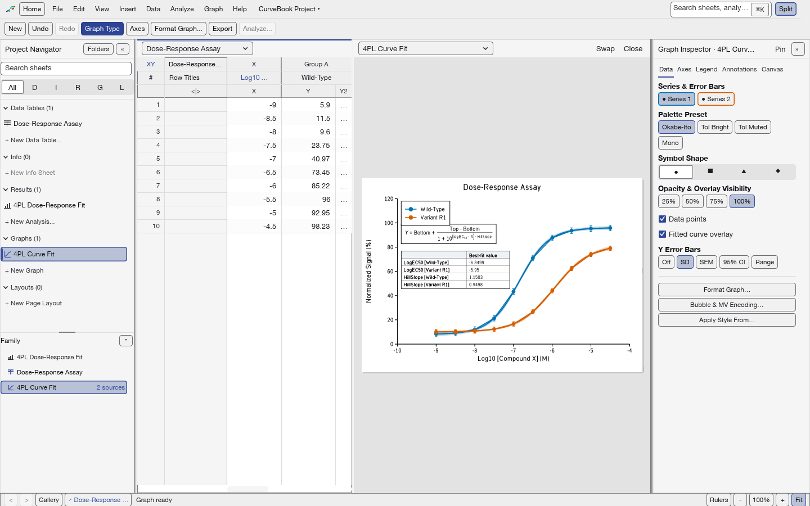

CurveBook is an open-source, clean-room biostatistics, nonlinear regression, and scientific graphing application written entirely from scratch in pure Rust—built to run locally across an offline desktop interface, deterministic CLI, and built-in MCP server.
Structured tables, live curve-fitting diagnostics, and multi-panel figure layouts recalculate reactively from one shared scientific engine.

Split Data & Live Curve Fitting: Edit XY replicates or exclude observations without altering raw values while nonlinear fits, 95% confidence ribbons, and the Graph Inspector update together.
Page Layout Composer (Dark Theme): Compose multi-panel journal figures on millimeter presets with aligned plot origins, significance brackets, scale bars, and embedded summary tables.ANOVA Diagnostics & Significance Brackets: Inspect multiple-comparison tables, non-blocking QOL-7 assumption diagnostics, Compact Letter Display labels, and pairwise significance brackets side by side.
Four pillars of one reproducible workspace
Interactive desktop workflows, scripted batches, and AI assistants operate on the same typed tables, statistical methods, and vector graphics pipeline.
Structured Data Tables & Formulas
Typed archetypes (XY, Column, Grouped, Contingency, Survival, Parts of Whole, Multiple Variables, and Nested), raw replicate and pre-summarized subcolumns, live = Calculated Variables, auditable non-destructive exclusions, plus microplate and tidy-long import.
Biostatistics & Curve Fitting
Group comparisons, multi-way and multifactor ANOVA, REML mixed models, multiplicity adjustments and Compact Letter Display, survival and Cox proportional hazards, contingency, ROC, GLMs, PCA and clustering, power planning, and parametric, custom DSL, or ODE nonlinear regression with profile-likelihood CIs and ROUT outlier handling.
Publication Graphs & Page Layouts
Scientific plot families, nonlinear and broken axes, live TeX best-fit equations, CVD-safe Okabe–Ito and Paul Tol palettes with live CVD preview, multi-panel physical millimeter layouts, native vector clipboard, and SVG, %PDF-1.7, PNG, TIFF, and .emf export.
Desktop GUI, CLI & Local AI (MCP)
Offline GPU-accelerated desktop window, deterministic headless curvebook-cli batch execution, and built-in stdio MCP server (curvebook-cli mcp) supporting --workdir filesystem confinement and optional --gui-only parity.
Your complete workspace
.curvebook · .curvebook.d/ · .cbtemplate
Share your full workspace. All at once.
Data, analyses, graphs, page layouts, and notes stay together in one deterministic project archive—or as an unpacked .curvebook.d/ folder for clean Git diffs.
Send a .curvebook project or reusable .cbtemplate to a collaborator so they can reopen the complete workspace in CurveBook. This is manual project-file sharing rather than hosted live collaboration; linked external CSV or TSV paths keep provenance metadata without automatically bundling files outside the project.
Choose an installer or archive for your computer from the latest release’s Assets list (avoid GitHub’s automatic source tarballs unless building from source). Desktop packages bundle both the curvebook desktop app and curvebook-cli (FreeBSD ships a Tier 2 CLI-only archive).
Per-user or per-machine installer bundling curvebook.exe and curvebook-cli.exe. Verify SHA256SUMS.txt and Sigstore provenance before bypassing Defender SmartScreen (Windows 11 Smart App Control blocks unsigned installers until Authenticode signing lands).